Seriously, even though we hate to admit it, people can be as shallow as Hawaiian fruit flies. There is a definite advantage to being handsome. I speak from experience.
Seriously, even though we hate to admit it, people can be as shallow as Hawaiian fruit flies. There is a definite advantage to being handsome. I speak from experience. | Feature Article - December 2005 |
| by Do-While Jones |
It seems that industry is smarter than academia, especially in the business world.
It is always good to be proved right, and it is especially good to be able to say, "I told you so," so quickly. In last month's newsletter, we quoted a candidate for the American Association for the Advancement of Science (AAAS) board of directors who was concerned about the lack of funding for science. He thought the way to get more science funding was to attack Intelligent Design and push evolution in the public schools. We said that approach is financial suicide.
At the time, we knew that the American Museum of Natural History (AMNH) in New York was planning a big Darwin exhibit. Here's what we didn't know until after our newsletter was published:
|
An exhibition celebrating the life of Charles Darwin has failed to find a corporate sponsor because American companies are anxious not to take sides in the heated debate between scientists and fundamentalist Christians over the theory of evolution. The entire $3 million (£1.7 million) cost of Darwin, which opened at the American Museum of Natural History in New York yesterday, is instead being borne by wealthy individuals and private charitable donations. 1 |
It isn't a "heated debate between scientists and fundamentalist Christians." It is a debate between scientists, but that's beside the point.
We aren't surprised that the AMNH could not find a sponsor. We are slightly surprised to find out the museum was dumb enough to think they could find one. Three million dollars is just a drop in the advertising bucket of a corporation like Pepsi, so they could easily have bankrolled this exhibit. If they had, sales of Coca Cola certainly would have soared. In general, museum sponsorship is a bargain. It is tax-free advertisement that creates customer good will, unless the exhibit is offensive.
In November of 2001, I went to the newly-opened exhibit of the dinosaur named "Sue" at the Chicago Field Museum of Natural History. Sue was purchased at auction by the McDonald's hamburger chain, and donated to the Field Museum. It was a (dare we say) "tastefully" done exhibit, that was almost entirely free of evolutionary speculation. It was scientific, informative, and created good will for the sponsor. It was, we hoped, the future direction for natural history museums.
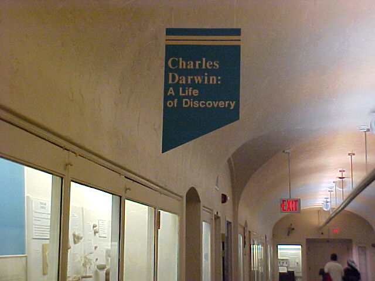
For many years, The University of Nebraska State Museum (Morrill Hall) has had a display called "Charles Darwin: A Life of Discovery".
|
A long hall on the first floor of the museum is a shrine to Darwin. Most of the display is devoted to things he found on his voyage. That's fine. It is factual. |
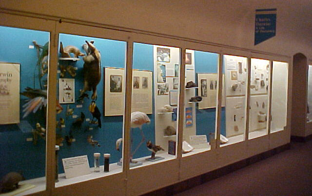 |
|
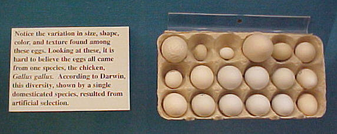 |
For example, some eggs are shown as an example of variation. There is no problem with that. |
|
Under a picture of Karl Marx the museum displays the caption to the right. Darwin's theory did influence Karl Marx. That's a fact. Hitler also used Darwin's theory to justify the extermination of Jews, but the museum fails to mention that. |
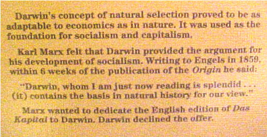 |
There is nothing wrong with any of these exhibits. Museums preserve history. Darwin was a historical figure. He had some influential ideas. Those ideas seemed plausible in the 19th century, but 21st century science has proved most of them wrong. A responsible museum should point this out. The Nebraska museum doesn't.
|
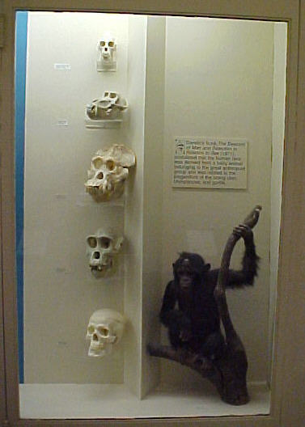 |
What we do object to, and we suspect even some evolutionists might object to, is their very misleading display of primate skulls. The top skull is a howler monkey, the bottom is human, and the intermediate skulls are other apes. Why are these skulls displayed this way? The casual observer would get the impression that howler monkeys evolved into orangutans, which evolved into gorillas, which evolved into man. That isn't an accurate representation of what evolutionists believe. Why display a human skull along side of ape skulls? What other reason could there be than to imply that there is scientific evidence of a common ancestor? |
This tired old display is not being replaced, but it is being supplemented by a new one called "Explore Evolution."
Explore Evolution |
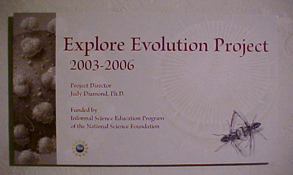 |
When I was there last summer, the Explore Evolution exhibit was still under construction, so I didn't get to see it. It opened on September 9, 2005. But here is what we know about it from their web site.
|
Explore Evolution investigates evolutionary principles in organisms ranging from the very smallest to the largest. The project focuses on seven research projects that have made a major contribution to our understanding of evolution. This exhibit features the work of the following scientists:
|
Let's look at these seven projects.
1. The "evolution" of HIV is not disputed by creationists. The only complaint creationists have with this is the confusing use of the term "evolution" to describe both variation within a species, and the origin of new kinds of life.
The evolution of HIV is the result of recombination of existing genes. That's a real phenomenon that can (and has been) demonstrated in the laboratory and observed in nature.
The "evolution" of new kinds of life (that is, fish evolving into amphibians, for example) needs more than simply rearranging existing genes. It requires the creation of entirely new genes.
Yes, I can mix flour, water, sugar, yeast, and eggs, in different ways to make different kinds of breads, rolls, muffins, and cakes. But no matter how I mix those ingredients I can't evolve a cake into a steak.
The fact that one can mix existing genes to get some variation in species doesn't prove that genes can arise naturally to create new kinds of creatures.
2. It is hard to imagine any child being thrilled by the discovery of different kinds of diatom fossils. Looking at diatoms is as exciting as looking at chalk. (Chalk is made of diatoms.)
The name suggests that diatoms consisted of only two atoms, but they weren't quite that small. Still, you need a scanning electron microscope (SEM) to see them. If you don't happen to have a SEM, you can see SEM pictures of them on the web. 3 The fact that chalk is made up of lots of different kinds of microscopic critters doesn't really prove anything about evolution. There is no way to tell whether or not they evolved from something that wasn't a diatom. There is no way to tell that they evolved into larger life forms. The fact is that chalk contains lots of tiny creatures--that's all.
3. Coevolution is what evolutionists fall back on when evolution doesn't make sense. Bees could not survive without flowers. Flowers could not survive without bees. Therefore, bees and flowers must have evolved step by step at the same time, helping each other evolve to the next higher level. (The only other explanation is that they were created at the same time, which is unthinkable.)
We don't know what the Explore Evolution exhibit says about ants, but we know what is in the scientific literature.
|
Fungus farming by ants of the tribe Attini originated in the early Tertiary, and thus predates human agriculture by about 50 million years. During its extensive evolutionary history, this symbiosis between "attine" ant farmers and their fungal cultivars has acquired an astonishing complexity, involving secretion of antibiotic "herbicides" to control weed molds and elaborate manuring regimes that maximize fungal harvests. Of the over 200 known extant attine species, all are obligate fungus farmers. ... In summary, phylogenetic patterns demonstrate that ants, like humans, succeeded at domesticating multiple cultivars during the history of their agricultural symbiosis, that the acquisition of novel cultivars is an ongoing process occurring in at least some extant ant species, and that cultivars are shared occasionally between ant lineages, probably by transfer between ant species. Domestication of free-living stocks therefore continued after the origin of fungus-growing and, along with cultivar exchange between ant species, may have persisted for 50 million years of ant evolution as a means to replace cultivars after accidental or pathogen-driven loss of gardens, to respond to environmental changes by acquiring cultivars with novel features, or to capitalize on strains that were improved while associated with other ant lineages. 4 |
In other words, they claim that for 50 million years ants have actively promoted the growth of fungi (think "mini-mushrooms") by planting them in gardens, which they kept weed-free using natural weed killers. The ants benefited because they got the food. The fungi benefited because the ants kept them from going extinct by taking care of them. It was a win-win situation (symbiosis).
How do they "know" this happened? They just assume that it must have happened because, if it didn't happen, the ants would have had to have been created with the instinct to grow fungi.
Children should certainly be taught that even ants realize that cooperation is advantageous. That's a fact. But it is irresponsible for a natural history museum to claim without proof that this behavior evolved over time. The public would be better served if the museum simply presented the scientific observation of cooperation in ants, and let atheists speculate about how this cooperation evolved naturally, and let Christians speculate about the psalmist's advice to "consider the ant," and the theological implications that God created creatures to be industrious and dependent upon one another.
4. Sexual selection is the idea that the better looking you are, the better your chances of scoring. Evolution is proved by the fact that there are no longer any ugly people in the world. Seriously, even though we hate to admit it, people can be as shallow as Hawaiian fruit flies. There is a definite advantage to being handsome. I speak from experience.
Although selection can increase the frequency of beautiful physical features in a population of a particular species, it doesn't cause that species to become another species. Peppered moths are peppered moths, whether most of them are light or dark, beautiful or ugly. People are people, regardless of the color of their skin. Variation in a population due to sexual selection (that is, perception of beauty) has nothing to do with macroevolution.
5. The variation in beaks of finches that Darwin noticed is real, but has nothing to do with macroevolution. It is simply variation in a species. This is just another attempt to confuse "microevolution" with "macroevolution."
6. We have talked about the genetic similarity of humans and chimps in past newsletters. What is lacking is proof that the similarity is the result of a common ancestor. Also lacking is a plausible mechanism by which apes and humans could have evolved from that common ancestor. Since this project is included in the exhibit on evolution, it implies that the exhibit attempts to connect similarity with a common ancestor. If so, that is bad science, and has no place in a reputable museum.
7. Gingerich's fanciful theories about whales have been discussed in this newsletter before. They are amusing, but not very scientific. Does the exhibit present any of the controversy (among respected evolutionists) of the various whale evolution scenarios? It can't because if it does, the exhibit would not help the evolutionary mission. It would merely show how little evidence there is for whale evolution.
In summary, of the seven projects in the Explore Evolution exhibit, only the last two have anything to do with real evolution! The fact that they end with whales makes us wonder, "Is that the best they've got?"
Granted, their theme has to do with evolution from the tiny to the huge, which might explain why they ended with whales. The irony of it all is that just one floor above the Explore Evolution exhibit is Elephant Hall!
Elephant HallElephant Hall is the first thing you see when you enter the University of Nebraska State Museum. They have an excellent collection of skeletons of elephants that used to live in Nebraska. This picture shows just a small portion of it. |
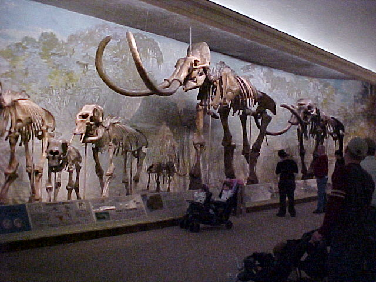 |
|
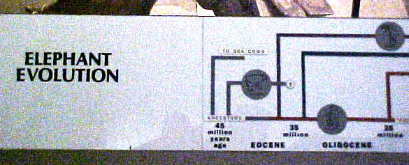 |
The elephants are fine, but they just had to ruin the science with silly speculation. Along the bottom of the display, they show fictitious timelines of evolution. |
What is the supposed evidence? The caption at the end of the chart says,
|
Jaws show how elephants evolved. The first ones were small and had short tusks. More than 200 extinct species have been found in rocks spanning over 45 million years. Many later ones had ivory shovels, scoops, prods, and hoes. Others lost the lower tusks as the trunk developed. Only two species of elephants are alive today. |
Let's separate the fact from the speculation. It is true that there are only two species of elephants alive today. It is also true that once there were many other elephant-like creatures that had various shaped tusks, but all of those creatures are now extinct. All the rest is speculation.
There is abundant evidence that Nebraska was once under water. That's a fact.
Some people believe there was a world-wide flood about four thousand years ago. This belief is based on ancient historical documents and oral traditions of civilizations all over the world. Other people believe the Gulf of Mexico extended into Canada 90 million years ago. This belief is based on the assumption of evolution, assumed evolutionary history, the assumed age of fossils, and the need to explain how Nebraska could have been covered with water (in some manner other than a global flood).
|
Evidence confirms that Nebraska was once completely underwater. A responsible museum would display that scientific evidence. That's fine. But the Nebraska State Museum presents speculation about how and when that happened as if it were fact. |
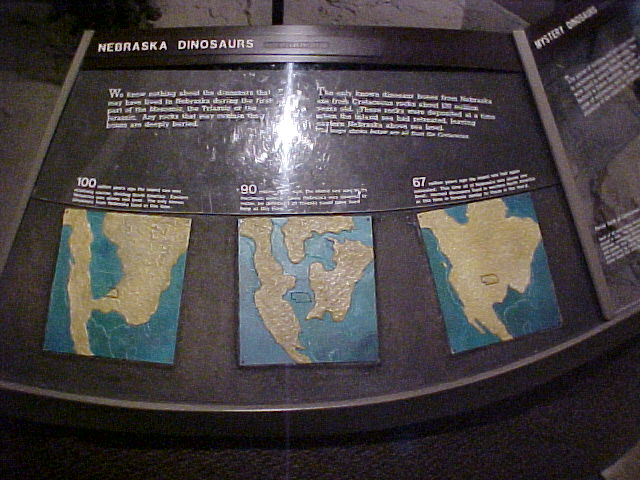 |
|
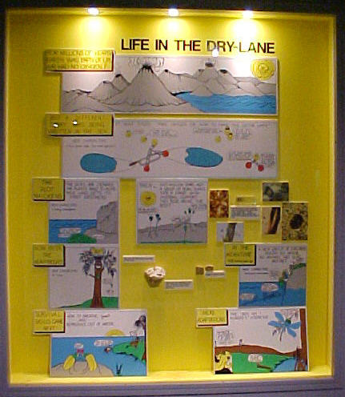 |
The Nebraska State Museum also has a fanciful cartoon about how life began, even though there is no accepted scientific explanation. I honestly don't remember if I saw this display in the museum 40 years ago. (In those days, there was no fee to enter Morrill Hall. Since it was about halfway between the electrical engineering building and where I had to park my car, it was a convenient shortcut in cold weather. I went through there often.) Forty years ago, it might have been reasonable to show this exhibit. Stanley Miller had done some origin of life experiments that looked promising. But now science has shown that his approach was wrong, and the origin of life is even more of a mystery than it was in 1950. |
|
In this display they quickly skip from "For millions of years the earth was empty of life. Earth had no oxygen!" to "The seas are crowded. The plants want to move. Thus the land gets its first explorers." It is so silly it is embarrassing. But what can you expect from a museum that can't tell a llama from a camel? |
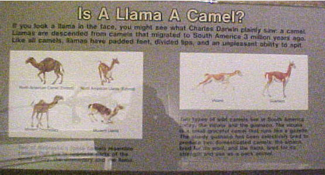 |
Is it any wonder that corporations are reluctant to sponsor exhibits on evolution? What company wants to be associated with such foolishness?
The Explore Evolution exhibit doesn't have a corporate sponsor. That's no surprise. What is surprising is this statement about the exhibit.
|
The Explore Evolution project was made possible through the support of the Informal Science Education program of the National Science Foundation. This material is based upon work supported by the National Science Foundation under Grant No. 0229294. Any opinions, findings, and conclusions or recommendations expressed in this material are those of the authors and do not necessarily reflect the views of the National Science Foundation (NSF). 5 |
Even the National Science Foundation is afraid to be associated with it! Is it any wonder they can't find any corporate sponsors?
| Quick links to | |||
|---|---|---|---|
| Science Against Evolution Home Page |
Back issues of Disclosure (our newsletter) |
Web Site of the Month |
Topical Index |
Footnotes:
1
Wapshott, The Daily Telegraph, Nov. 20, 2005, "The Darwin exhibition frightening off corporate sponsors"(Ev)
2
http://explore-evolution.unl.edu/exhibit.html
(Ev)
3
http://www.ucmp.berkeley.edu/chromista/diatoms/diatomfr.html
(Ev)
4
Mueller, et. al., Science, 25 September 1998, Vol. 281, "The Evolution of Agriculture in Ants", pages 2034 - 2038
(Ev)
5
http://explore-evolution.unl.edu/credits.html
(Ev)